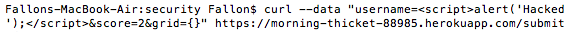
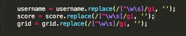

The product in which I was hired to perform a security assessment is the 2048 game center that William Glockner created by using Heroku and a Mongo database. My job was to evaluate the security of the application. I did this by performing attacks on the server, both before and after reading the source code.
I tested the application at first by using curl. I wanted to see if I could display an alert from a Cross-Site Scripting attack, which I did (specific details of this attack in Abstract of Findings). I also used a parameter search in /scores.json to see if I could perform a SQL injection attack that displayed all the scores in the database.
I found three serious security and privacy issues. The first security vulnerability I identified was Cross-Site Scripting. Cross-Site Scripting occurs when a user is able to inject scripts, or information, into the web page which can then be seen by other users on the site. I was able to create an alert box that displayed "Hacked" when the morning-thicket-88985.herokuapp.com page was loaded.
Another issue I discovered was vulnerabilty to a SQL injection. A SQL injection involves changing a user input, like a username for example, into a query action that reads into the database and gives up revealing information to the user. I was able to use a SQL injection that gave me the list of all scores in the database.
The third privacy issue I found was in the source code. The username for the mongo database used is hardcoded. Having sensitive information in the source code leaves the site extremely vulnerable, leaving private credentials available to be seen and exploited.
The issue was found on the main page, morning-thicket-88985.herokuapp.com. I coded a script so that an alert box pops up when the page first loads. This severity of this issue is high, because clients can easily embed their personal code onto the page and virtually take control of the entire site. The issue is that XSS permits hackers to put whatever script they desire onto the page, visible to all other visitors. I was able to identify it by using curl:
In this case, my alert box pops up with a message that says "hacked".
I would resolve this problem by adding the following code to exclude special characters:
The issue was found on the query scores page, morning-thicket-88985.herokuapp.com/scores. I made a SQL injection that gave me access to the entire scores database. This severity of this issue is high, because hackers can gain access to sensitive information in a server's database. The issue is that this SQL injection allows a user to gain access to potentially private information. I found this by using the query string of the URL. Instead of a valid username, I created a SQL injection. In this case, my query string gives me access to the entirety of the scores. I would resolve this problem by making parametized queries.
The issue was found within the source code. This severity of this issue is medium, because hackers are given the server's private user information. In this case, the password is not shown so it could be worse. The issue is that this private information is easily found in the source code. Hackers could exploit this, using this username to gain control of the application.
I would use these Mongo URI options instead:
My big takeaway from my analysis is to validate user input (never trust user input!!) and eliminate hardcoded personal information. In addition to my own analysis, my recommendation for this application is to use a software, like Burp, to scan for more security vulnerabilities. For $399.00 a year, Burp would give you access to a web security vulnerability scanner, advanced manual tools and essential manual tools. For $3,999 a year, Burp provides scheduled and repeat scans, unlimited scalability, and CI integration in addition to the security scanner.